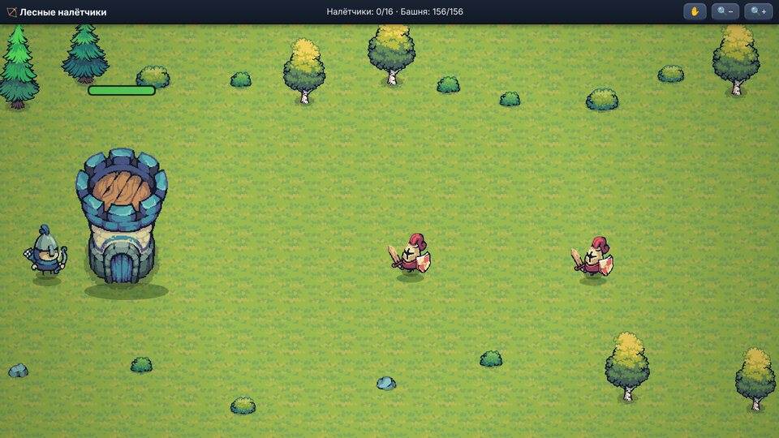
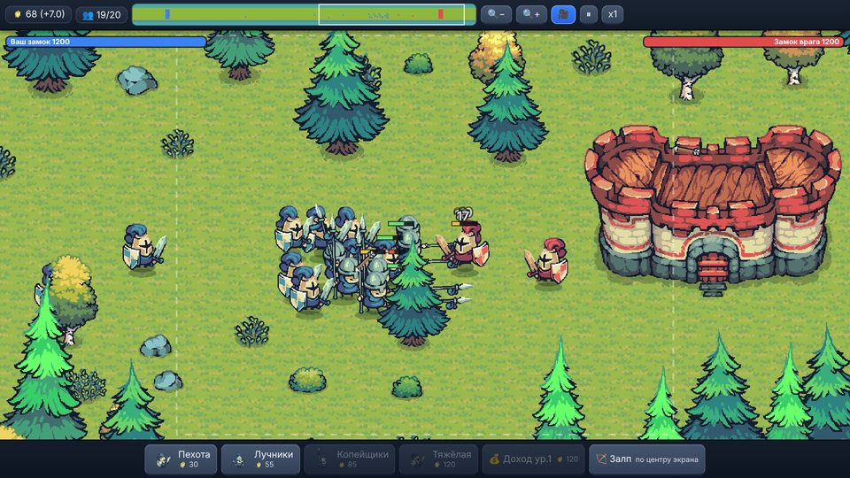

Conquest
Стратегия в реальном времени на большой карте из 140 областей. Захватывайте земли, собирайте армию, а за золотые области сражайтесь в шести разных минииграх. Бесплатно, без рекламы и покупок.
A real-time strategy game on a big map of 140 regions. Conquer lands, build your army, and fight for golden regions in six different mini-games. Free, no ads, no in-app purchases.
Что внутриFeatures
- Большая карта: 140 областей, замки растут вместе с гарнизоном.
- Четыре типа войск: пехота, лучники, копейщики, тяжёлая пехота.
- Золотые области с двойной добычей и миниигры: золотая лихорадка (лассо), лесные налётчики, оборона шахты, защита башнями, дуэль чемпионов, битва за ресурс.
- Управление одним жестом: протяните стрелку от своей области к соседней.
- Три уровня сложности, автосохранение, короткое обучение.
- Big map: 140 regions, castles grow with garrison size.
- Four unit types: infantry, archers, spearmen, heavy infantry.
- Golden regions with double income and mini-games: gold rush (lasso), forest raiders, mine defense, tower defense, champion duel, resource battle.
- One-gesture control: drag an arrow from your region to a neighbor.
- Three difficulty levels, autosave, short tutorial.
СкриншотыScreenshots





КонтактыContact
Вопросы, ошибки, идеи: zenchingames@gmail.com
Questions, bugs, ideas: zenchingames@gmail.com